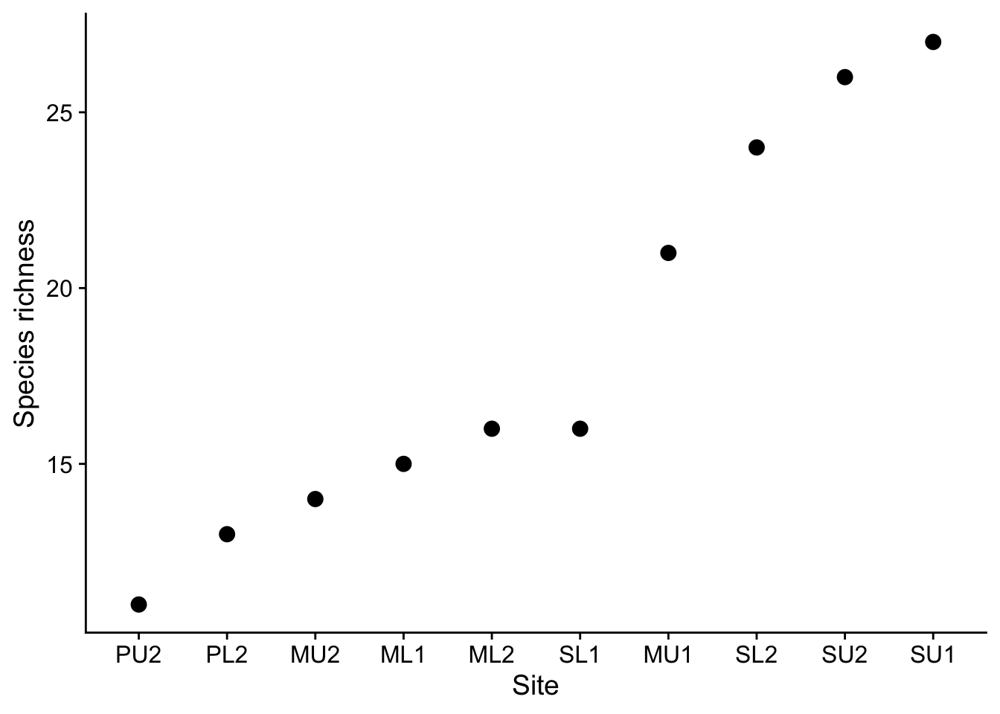
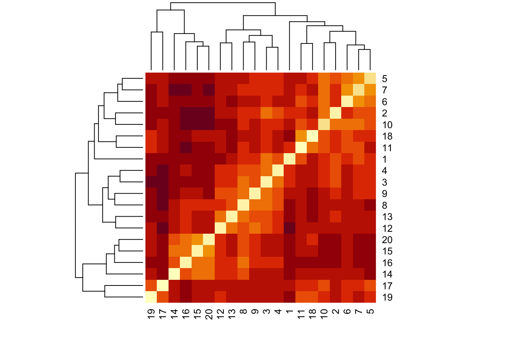
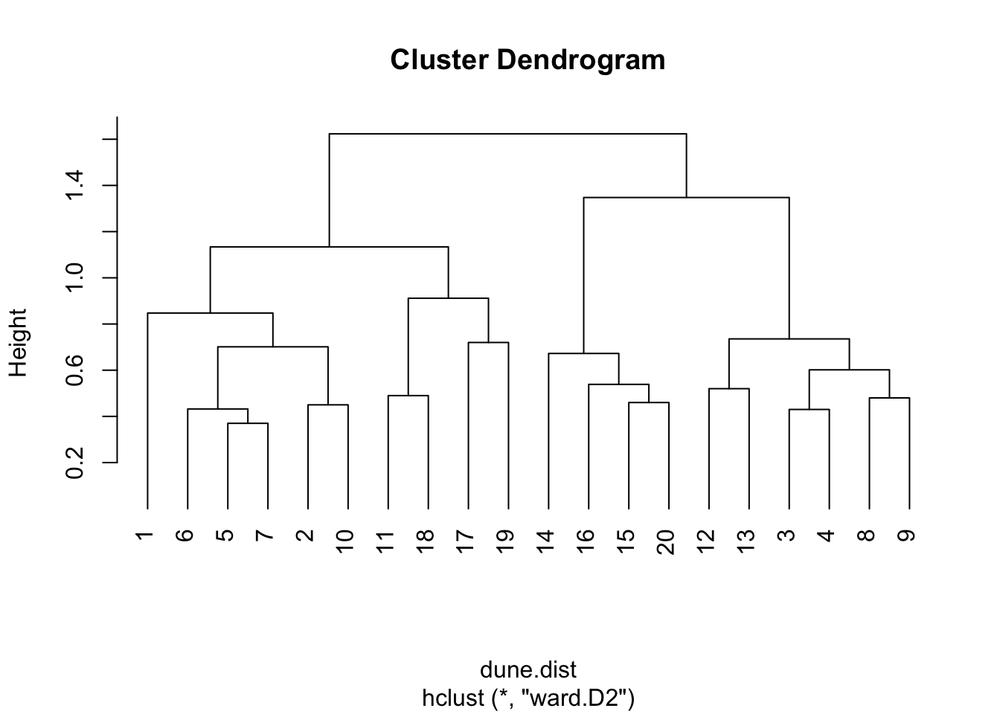
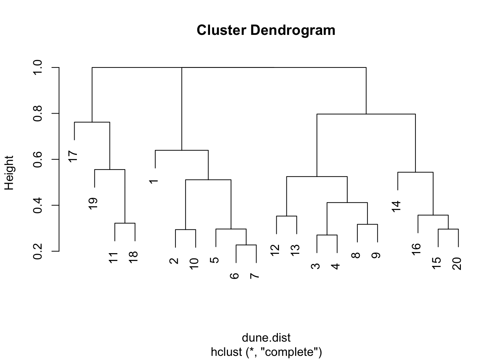

library(tidyverse)
library(here)
library(vegan)
library(kableExtra)
# the cowplot package provides an excellent theme that helps plots to look good, and functions to arrange multiple plots within a figure
library(cowplot) 16 Community Ecology
As an ecologist you might visit several sites and at each one record either presence/absence or abundance data for whatever flora and/or fauna species you find there, together, possibly, with a range of environmental variables that characterise the site on that day in some way, such as properties of the soil, meteorological conditions, the site designation, aspect and so on.
You could have questions about each site, such as its species richness or its diversity, but you might also have questions about what links or differentiates the sites. Which are most and least similar to each other in terms of species assemblages, and how is this driven by the environmental variables?
In this tutorial we introduce some elementary techniques that enable us to address these questions.
16.1 Preliminaries
The vegan package used here provides tools for descriptive community ecology. It can be found on CRAN.
Some of the data used here is from Mark Gardener’s book: Statistics for Ecologists Using R and Excel.
You will need to add the data sets plant_species_lists.csv and bird.csv to your data folder inside your project folder.
This worksheet assumes that you are using RStudio and have it open on your laptop.
You should have a project folder on your laptop where you are doing the R work related to this module. You will have given it a name that is meaningful and useful to you. In what follows, I will refer to it as your RStuff folder.
You should be working within this Project. If you are not doing so already, go to File/Open Project then navigate to your RStuff (or whatever you have called your project) folder and click on the RStuff.Rproj file within it. RStudio will then restart and you will see the name of your project folder at the top-right-hand corner of the RStudio window.
Using File/New File/R Notebook, start a new R Notebook in your RStuff/scripts folder. Delete all the explanatory material beneath the yaml, amend the title in the yaml to something sensible then add author and date lines to the yaml, so that you end up with something like the yaml at the top of this script.
16.2 Load packages
Suppose we have visited several sites and listed the different species present at each site. We have not recorded how many of each species are present
16.3 Read in data
filepath<-here("data","plant_species_lists.csv")
plrich<-read_csv(filepath)
glimpse(plrich)Rows: 183
Columns: 2
$ Site <chr> "ML1", "ML1", "ML1", "ML1", "ML1", "ML1", "ML1", "ML1", "ML1",…
$ Species <chr> "Achillea millefolium", "Centaurea nigra", "Lathyrus pratensis…There are two columns of data, one containing site names and one containing species names.
Here are the first few rows:
head(plrich)# A tibble: 6 × 2
Site Species
<chr> <chr>
1 ML1 Achillea millefolium
2 ML1 Centaurea nigra
3 ML1 Lathyrus pratensis
4 ML1 Leucanthemum vulgare
5 ML1 Lotus corniculatus
6 ML1 Plantago lanceolata 16.4 Species richness
Suppose that initially we just want to find how many species were recorded at each site. There are several ways we could do this:
16.4.1 Species richness the classic R way
Old-school R is terse and sometimes opaque, but it is also very powerful.
First we create a table indicating the presence/absence of each of the species at each of the sites.
ps<-table(plrich$Species,plrich$Site)
ps # - uncomment this line if you want to see the table we have just created -it is big!
ML1 ML2 MU1 MU2 PL2 PU2 SL1 SL2 SU1 SU2
Achillea millefolium 1 1 1 1 0 1 0 0 0 0
Aegopodium podagraris 0 0 0 0 0 0 0 1 0 0
Agrostis capillaris 0 1 1 1 1 0 1 1 1 0
Agrostis stolonifera 0 0 0 0 0 1 0 1 0 0
Anthriscus sylvestris 0 0 0 0 0 0 0 0 1 1
Arctium minus 0 0 0 0 0 0 0 0 0 1
Arrhenatherum elatius 0 0 0 0 1 0 0 1 1 1
Bidens cernua 0 0 0 0 1 0 0 0 0 0
Brachythecium rutabulum 0 0 0 0 1 0 1 1 1 0
Bromus hordeaceus 0 0 0 0 0 0 1 0 1 0
Calystegia sepium 0 0 0 0 0 0 0 1 0 0
Capsella bursa-pastoris 0 0 0 0 1 1 0 0 0 0
Cardamine pratensis 0 0 0 0 1 0 0 0 0 0
Centaurea nigra 1 1 1 1 0 0 0 0 0 0
Cerastium fontanum 0 0 1 0 0 1 0 0 1 1
Chamerion angustifolium 0 0 0 0 0 0 0 0 1 0
Chenopodium album 0 0 0 0 0 0 0 0 1 0
Cirsium arvense 1 0 1 1 1 1 1 1 1 1
Cirsium palustre 0 0 0 0 1 0 0 0 0 0
Crataegus monogyna (s) 0 0 0 0 0 0 0 0 1 0
Cynosurus cristatus 1 0 0 1 0 0 0 0 0 0
Dactylis glomerata 0 0 0 0 0 0 0 1 1 1
Deschampsia flexuosa 1 0 1 0 0 0 0 0 0 0
Elytrigia repens 0 0 0 0 0 0 0 1 0 0
Epilobium hirsutum 0 0 0 0 0 0 0 1 0 1
Epilobium montanum 0 0 0 0 1 0 0 0 0 1
Fallopia convolvulus 0 0 0 0 0 0 0 0 1 1
Festuca rubra 1 0 1 0 0 0 0 0 0 0
Filipendula ulmaria 0 0 0 0 0 0 0 1 0 0
Fraxinus excelsior (s) 0 0 0 0 0 0 0 0 1 0
Galium aparine 0 0 0 0 0 0 1 1 1 1
Galium verum 0 1 1 0 0 0 0 0 0 0
Geranium columbinum 0 0 0 0 0 0 1 0 0 0
Geranium molle 0 0 0 0 0 0 1 0 0 0
Glechoma hederacea 0 0 0 0 0 0 0 0 0 1
Hedera helix (g) 0 0 0 0 0 0 0 0 0 1
Heracleum sphondylium 0 0 0 0 0 0 0 0 1 1
Holcus lanatus 1 1 1 0 0 1 1 1 1 1
Impatiens glandulifera 0 0 0 0 0 0 0 1 0 0
Juncus effusus 0 0 0 0 1 0 0 0 0 0
Juncus inflexus 0 0 0 0 0 0 0 0 0 1
Lathyrus pratensis 1 0 0 0 0 0 0 1 0 0
Leucanthemum vulgare 1 1 1 1 0 0 0 0 0 0
Lolium perenne 0 0 0 0 0 1 1 0 0 1
Lotus corniculatus 1 1 1 1 0 1 0 0 0 0
Phalaris arundinacea 0 0 0 0 0 0 0 1 0 0
Plantago lanceolata 1 1 1 1 0 0 0 0 0 0
Plantago major 0 1 1 1 0 0 0 0 0 0
Poa pratensis 0 0 0 0 0 0 0 0 1 0
Poa trivialis 0 0 0 0 0 0 0 1 0 0
Prunella vulgaris 1 1 0 1 0 0 0 0 0 0
Quercus robur (s) 0 1 0 0 0 0 0 0 1 0
Quercus seedling/sp 0 0 1 0 0 0 0 0 0 0
Ranunculus acris 1 0 1 0 0 0 0 0 0 0
Ranunculus repens 0 1 1 1 1 1 1 1 1 0
Rubus fruticosus agg (g) 0 0 0 0 0 0 1 1 1 1
Rumex acetosa 0 1 1 1 0 0 0 0 0 0
Rumex crispus 0 0 0 0 0 0 1 0 1 0
Rumex obtusifolius 0 0 1 0 0 0 0 1 1 1
Rumex sanguineus 0 0 0 0 0 0 1 0 0 0
Salix caprea (s) 0 0 0 0 0 0 0 0 0 1
Salix fragilis (s) 0 0 0 0 0 0 0 1 0 0
Silene dioica 0 0 0 0 0 0 0 0 0 1
Sonchus arvensis 0 0 0 0 0 0 1 0 1 1
Sonchus asper 0 0 0 0 0 0 0 0 0 1
Stachys sylvatica 0 0 0 0 0 0 0 1 1 1
Symphytum officinale 0 0 0 0 0 0 0 1 0 0
Tanacetum vulgare 0 0 0 0 0 0 0 0 0 1
Taraxacum seedling/sp 0 0 1 1 0 0 0 0 0 0
Thuidium tamariscinum 0 0 0 0 0 0 1 0 0 0
Trifolium dubium 0 0 0 0 0 1 0 0 0 0
Trifolium pratense 1 1 1 1 0 0 0 0 0 0
Trifolium repens 1 1 1 0 1 1 0 0 0 0
Urtica dioica 0 1 0 0 1 0 1 1 1 1
Veronica arvensis 0 0 0 0 0 0 0 0 1 0
Vicia hirsuta 0 0 0 0 0 0 0 0 1 1Note that in this table, most of the entries are zeros. This is common in data recording of this kind. At any one site, most of the species are not found.
Then we calculate the sum of each column. This will give us the number of species found at each site.
psr<-colSums(ps)
psrML1 ML2 MU1 MU2 PL2 PU2 SL1 SL2 SU1 SU2
15 16 21 14 13 11 16 24 27 26 Note that the actual number of species at each site will be greater than these values. How much greater, do you think, and how could we estimate the true richness from the observed richness?
16.4.2 Species richness the tidyverse way
We can use the group_by() and summarise() combo yet again. In this code chunk we finish off with the arrange() function from the dplyr package (the sub-package of tidyverse that is used for data manipulation) to present the sites in descending order of species richness.
plr<-plrich |>
group_by(Site) |>
summarise(species.richness=n()) |>
arrange(Site)
plr# A tibble: 10 × 2
Site species.richness
<chr> <int>
1 ML1 15
2 ML2 16
3 MU1 21
4 MU2 14
5 PL2 13
6 PU2 11
7 SL1 16
8 SL2 24
9 SU1 27
10 SU2 26Try tweaking the code so that you get this table in ascending order of richness, or in alphabetical order of site. Hint: try adjusting the argument of the arrange() function.
Plot of species richness
plrich |>
group_by(Site) |>
summarise(species.richness=n()) |>
#ggplot(aes(x=Site,y=species.richness)) +
ggplot(aes(x=fct_reorder(Site,species.richness),y=species.richness)) +
geom_point(size=3) +
labs(x="Site",
y="Species richness") +
theme_cowplot()
16.4.3 Species richness the vegan way
vegan is a package that brings with it a lot of functions intended for analysis of community ecology data. It’s style is ‘old-school’ R rather than tidyverse R, which is what we have mainly been using.
ps<-table(plrich$Species,plrich$Site)
specnumber(ps,MARGIN=2) #MARGIN=2 means summing over columns (not the usual vegan way!)ML1 ML2 MU1 MU2 PL2 PU2 SL1 SL2 SU1 SU2
15 16 21 14 13 11 16 24 27 26 16.4.4 Species richness of the dune data set.
This data set is built into the vegan package. It contains cover class values of 30 species at 20 sites, with the sites arranged by row and the species by column. This is the default expectation of functions in vegan. The species names are abbreviated to 4+4 letters.
data(dune)
head (dune) Achimill Agrostol Airaprae Alopgeni Anthodor Bellpere Bromhord Chenalbu
1 1 0 0 0 0 0 0 0
2 3 0 0 2 0 3 4 0
3 0 4 0 7 0 2 0 0
4 0 8 0 2 0 2 3 0
5 2 0 0 0 4 2 2 0
6 2 0 0 0 3 0 0 0
Cirsarve Comapalu Eleopalu Elymrepe Empenigr Hyporadi Juncarti Juncbufo
1 0 0 0 4 0 0 0 0
2 0 0 0 4 0 0 0 0
3 0 0 0 4 0 0 0 0
4 2 0 0 4 0 0 0 0
5 0 0 0 4 0 0 0 0
6 0 0 0 0 0 0 0 0
Lolipere Planlanc Poaprat Poatriv Ranuflam Rumeacet Sagiproc Salirepe
1 7 0 4 2 0 0 0 0
2 5 0 4 7 0 0 0 0
3 6 0 5 6 0 0 0 0
4 5 0 4 5 0 0 5 0
5 2 5 2 6 0 5 0 0
6 6 5 3 4 0 6 0 0
Scorautu Trifprat Trifrepe Vicilath Bracruta Callcusp
1 0 0 0 0 0 0
2 5 0 5 0 0 0
3 2 0 2 0 2 0
4 2 0 1 0 2 0
5 3 2 2 0 2 0
6 3 5 5 0 6 0To find the species richness of the sites we use the specnumber() function to find the number of non-zero values in each row:
specnumber(dune,MARGIN=1) 1 2 3 4 5 6 7 8 9 10 11 12 13 14 15 16 17 18 19 20
5 10 10 13 14 11 13 12 13 12 9 9 10 7 8 8 7 9 9 8 Note that we use MARGIN=1 in this case, which instructs vegan to sum along rows since the sites are arranged by row, rather than by column. In fact, we could have left it out, since as we can see from the help for specnumber, the default value for MARGIN is 1, ie sites in rows, species in columns, which is the default expectation of vegan. If we wanted the opposite, sites in columns and species in rows, then we would have specified MARGIN=2.
16.4.5 Species richness of the dune data set - doing it the tidyverse way
You can take this section or leave it - I’ll take it!. If you find the vegan talk of MARGIN confusing, then you might prefer to use the tidyverse style to find the species richness of the sites in the dune data set.
In the code chunk below we note that the dune data set is not at all tidy. To be so, all 30 columns in the original data set should be collapsed into two, which here we will call “species” and “abundance”. We use the (I find) repeatedly useful function pivot_longer() to do this. Before we do this it will be useful to use the mutate() function to add a column that gives an ID number for each site.
dune |>
mutate(id=seq(1:n())) |># add in a site ID column
pivot_longer(1:30,names_to="species",values_to="abundance") |> #tidy the abundance data
filter(abundance>0) |> # remove the lines where the the abundance is zero
group_by(id) |> # group by site
summarise(species.richness=n()) # count the number of species (rows) left for each site.# A tibble: 20 × 2
id species.richness
<int> <int>
1 1 5
2 2 10
3 3 10
4 4 13
5 5 14
6 6 11
7 7 13
8 8 12
9 9 13
10 10 12
11 11 9
12 12 9
13 13 10
14 14 7
15 15 8
16 16 8
17 17 7
18 18 9
19 19 9
20 20 816.5 Diversity Index
‘Better stories can be told about Simpson’s index than about Shannon’s index, and still grander narratives about rarefaction (Hurlbert 1971). However, these indices are all very closely related (Hill 1973), and there is no reason to despise one more than others (but if you are a graduate student, don’t drag me in, but obey your Professor’s orders).’
If we have abundance data. or each species at a site, for example percentage cover, we have more information than if had simply had presence-absence data. Hence, not surprisingly, w can Given the proportion \(p_i\) of each of several species \(i\) within a population, we can estimate the so-called diversity of the population in one of several ways from proportions \(\hat p_i\) of each species within a sample. The proportions can be of total counts or of total percentage cover.
16.5.1 Shannon’s Diversity Index
This calculates \(H\) where
\[H=-\sum{p_i\log_b p_i}\]
where \(b\) is the base of the log. Most commonly, natural logs to base \(e^1\) are used. Those are the ones often denoted ln on calculators and in some books. Or sometimes log_e, or sometimes just log. Confusing, eh? It is usually clear from the context when natural logs are being used.
16.5.2 Simpson’s and Inverse Simpson’s Diversity Index
These are based on the quantity
\[D=\sum_ip_i^2\]
Simpson’s index is \(1-D\) and varies from 0 to 1 while the inverse Simpson’s index is \(1/D\)
Note how this measure \(D\) makes sense as a diversity index. If a site had one species that comprised 100% of the cover of the site, ie \(p = 1\) for that species and \(p = 0\) for every other species, then the diversity of that site would be low, right? The value of \(D\) would be 1 and the Simpson’s index value would thus be zero.
On the other hand, if we had a more diverse site with each of ten species having a percentage cover of 10%, so that each of the \(p_i\) would be 0.1, then the value of \(D\) would be \(\sum_ip_i^2=10\times 0.1^2=0.1\) This would give a Simpson’s diversity index value of 0.9.
Try this out for a site with two species, or five, or 100, each with equal cover \(p_n\). What values do you get in these cases for the Simpson’s index?
| \(N\) species | \(p\) | \(D\) | Simpson’s Index = \(1-D\) |
|---|---|---|---|
| 2 | 0.5 | \(p_1^2 + p_2^2 = 0.5\) | \(1-0.5 = 0.5\) |
| 5 | 0.2 | \(p_1^2 + \cdots p_5^2 = 0.2\) | \(1-0.2 = 0.8\). |
| 100 | 0.01 | \(p_1^2 + \cdots p_{100}^2 = 0.01\) | \(1-0.01 = 0.99\). |
16.6 Calculation of bird species diversities in a range of habitats
As an example, let us suppose we have gathered count data on the numbers of unique individuals of different species of birds observed in a range of habitats. What are the diversities of bird species in each of the habitats?
Our data collection sheet might look like this:
bird<-read_csv(here("data","bird.csv"))
bird# A tibble: 6 × 6
Species Garden Hedgerow Parkland Pasture Woodland
<chr> <dbl> <dbl> <dbl> <dbl> <dbl>
1 Blackbird 47 10 40 2 2
2 Chaffinch 19 3 5 0 2
3 Great Tit 50 0 10 7 0
4 House Sparrow 46 16 8 4 0
5 Robin 9 3 0 0 2
6 Song Thrush 4 0 6 0 0This is nice for us to read, but not the best for analysis. It is not ‘tidy’. Each of the habitats surveyed is really a different level of the single variable ‘habitat’. Hence, this variable is appearing across five columns. A tidy data set has any variable appear only once in any one row. When this is the case, analysis becomes much easier. We can tidy this data set using the command pivot_longer(), which we use here to produce a new version of the data set called tidy.bird, in which we have just two columns, habitat and abundance. This data set is tidy.
Note that tidy data sets tend to be longer and thinner than untidy data sets, with more rows and fewer columns.
In the chunk below, we start with the data frame bird, tidy it, then write the result into an object called tidy.bird.
tidy.bird<- bird |>
pivot_longer(Garden:Woodland,names_to="habitat",values_to="abundance") |>
arrange(habitat) # sort in order of habitat name
tidy.bird # have a look at it# A tibble: 30 × 3
Species habitat abundance
<chr> <chr> <dbl>
1 Blackbird Garden 47
2 Chaffinch Garden 19
3 Great Tit Garden 50
4 House Sparrow Garden 46
5 Robin Garden 9
6 Song Thrush Garden 4
7 Blackbird Hedgerow 10
8 Chaffinch Hedgerow 3
9 Great Tit Hedgerow 0
10 House Sparrow Hedgerow 16
# ℹ 20 more rowsIn this next chunk we use the tidy data set to calculate the three diversity indices - Shannon, Simpson and Inverse Simpson, for each of the habitats. First we do this in a ‘home-made’ way, typing in the formulae for each index ourselves
tidy.bird |>
group_by(habitat) |>
filter(abundance>0) |>
summarise(N=sum(abundance),
shannon.di=-sum((abundance/sum(abundance))*log(abundance/sum(abundance))),
simpson.di=1-sum((abundance/sum(abundance))^2),
inv.simpson.di=1/sum((abundance/sum(abundance))^2)) |>
arrange(-shannon.di) |>
kbl(digits=3) |>
kable_styling(full_width=FALSE)| habitat | N | shannon.di | simpson.di | inv.simpson.di |
|---|---|---|---|---|
| Garden | 175 | 1.542 | 0.762 | 4.205 |
| Parkland | 69 | 1.248 | 0.617 | 2.609 |
| Hedgerow | 32 | 1.154 | 0.635 | 2.738 |
| Woodland | 6 | 1.099 | 0.667 | 3.000 |
| Pasture | 13 | 0.984 | 0.592 | 2.449 |
Now let’s do that using the diversity() function in vegan. I have left in the MARGIN and base arguments, but we could have left them out since we are happy to use their default values.
# MARGIN =2 means sum along rows
tidy.bird |>
group_by(habitat) |>
summarise(N=sum(abundance),
shannon.di=diversity(abundance, index = "shannon", MARGIN = 2,base=exp(1)),
simpson.di=diversity(abundance, index = "simpson", MARGIN = 2),
inv.simpson.di=diversity(abundance, index = "invsimpson", MARGIN = 2)) |>
arrange(-shannon.di) |> # sort rows in descending order of shannon diversity index
kbl(digits=3) |>
kable_styling(full_width = FALSE)| habitat | N | shannon.di | simpson.di | inv.simpson.di |
|---|---|---|---|---|
| Garden | 175 | 1.542 | 0.762 | 4.205 |
| Parkland | 69 | 1.248 | 0.617 | 2.609 |
| Hedgerow | 32 | 1.154 | 0.635 | 2.738 |
| Woodland | 6 | 1.099 | 0.667 | 3.000 |
| Pasture | 13 | 0.984 | 0.592 | 2.449 |
In the next chunk we use the diversity() function alone to give us the Shannon diversities for each of the habitats. This line of code uses the original untidy data set bird, and asks that the counts in columns 2 to 6 be used to caclulate the diversities of each of the habitats. MARGIN=2 is the instruction to look down the columns (MARGIN=1 would mean look along the rows) , while [,2:6] is an example of how data fames can be spliced and diced. bird[2,3] would mean take the element at row 2, column 3, while [,2:6] means take the block of data in all the rows, and columns 2 to 6
diversity(bird[,2:6],MARGIN=2) Garden Hedgerow Parkland Pasture Woodland
1.5422709 1.1538939 1.2483919 0.9839614 1.0986123 In this example we see that the vegan package provides functions that do useful things for us that we sometimes could have done in another way, but where that way might have been more complicated. In this example, use of the diversity() function from vegan means that we don’t have to know or type in the actual formulae for whichever index we are after.
Now let us find the Shannon diversity index of the 20 sites in the dune dataset. That is, species in columns, sites in rows.
data(dune)
diversity(dune) 1 2 3 4 5 6 7 8
1.440482 2.252516 2.193749 2.426779 2.544421 2.345946 2.471733 2.434898
9 10 11 12 13 14 15 16
2.493568 2.398613 2.106065 2.114495 2.099638 1.863680 1.979309 1.959795
17 18 19 20
1.876274 2.079387 2.134024 2.048270 See how easy this is to implement when we have arranged our data as in the dune dataset?
16.6.1 Are these diversities different?
If we have a number of habitats, and for each of them we have arrived at one or other of the diversity indices considered above, we might reasonably ask if there is a significant difference between the indices.
This is difficult. For each habitat we have a single number, so we cannot use a t-test/ANOVA, and the number is not a count, so we cannot use a chi-squared test.
16.7 (Dis)similarity
The last problem, of telling how similar or dissimilar sites are, based on the species assemblages found at them or on a clutch of environmental variables measured at each site, or both, is a common task in ecology.
In this and the following sections we will explore the concept of ‘dissimilarity’ and the various ways it can be calculated and displayed.
The vegan package has the function vegdist() which permits dissimilarity indices to be calculated for both presence-absence data and for data where abundances have been recorded in some form (eg count, frequency, percentage cover).
For more information on vegdist, particularly on the specifics of what the possible indices are that can be calculated, type ?vegdist into the console window and look at the Help information that appears in the bottom-right pane of RStudio.
Let us calculate the Jaccard index of dissimilarity between the sites of the dune data set. This data set, remember, gives cover class values of 30 species on 20 sites. Note that there is an accompanying data set dune.env which contains environmental data for each of the sites. This is a common scenario, whereby you gather both species and environmental data for a given site.
The Jaccard index of dissimilarity between two sites is the ratio of the number of species that they have in common to the total number of species contained in either one or both sites.
This can be calculated as follows:
- Number of species in site A = A
- Number of species in site B = B
- Number of species common to both sites = C
- Thus, total number of species across both sites = A + B - C
From which Jaccard Index J = C / (A + B - C)
If each site has exactly the same species assemblage, so that they are identical in this respect, then this index is 1. If there are no shared species between the sites so that there is no point of similarity, then this index is 0. Hence the Jaccard index J between two sites is always between 0 and 1.
For example if clifftop site A contains Armeria maritima, Jasione montana and Silene uniflora while clifftop site B contains Armeria maritima, Jasione montana and Anthyllis vulneraria, the number of species they have in common is two, while the total number of species between them is four so that the Jaccard index of dissimilarity between them \(J(A,B) = J(B,A) = \frac{2}{4}= 0.5\)
THe Sorensen index is similar
Since we have 20 sites, so that each site has to be compared with 19 others, and since the dissimilarity of site 1 and site 2 is the same as that of site 2 and site 1 ie J(1,2) = J(2,1), just as the distance from Bristol to Bath is the same as the distance from Bath to Bristol, this gives 190 distinct Jaccard indices for this data set.
dune.dist<-round(vegdist(dune,method="jaccard",binary=FALSE),2)
dune.dist 1 2 3 4 5 6 7 8 9 10 11 12 13 14 15
2 0.64
3 0.62 0.51
4 0.69 0.53 0.43
5 0.78 0.58 0.64 0.67
6 0.78 0.68 0.72 0.78 0.46
7 0.71 0.61 0.64 0.67 0.37 0.37
8 0.79 0.70 0.49 0.58 0.78 0.74 0.69
9 0.75 0.65 0.51 0.55 0.67 0.75 0.66 0.48
10 0.73 0.45 0.64 0.65 0.52 0.48 0.43 0.70 0.75
11 0.72 0.70 0.71 0.74 0.77 0.62 0.62 0.69 0.75 0.58
12 0.96 0.83 0.61 0.69 0.82 0.78 0.77 0.61 0.52 0.84 0.80
13 0.91 0.75 0.60 0.68 0.81 0.86 0.78 0.54 0.58 0.85 0.86 0.52
14 1.00 0.88 0.86 0.89 0.94 0.89 0.93 0.72 0.86 0.86 0.90 0.82 0.79
15 1.00 0.95 0.83 0.85 0.92 0.89 0.91 0.60 0.80 0.92 0.85 0.77 0.81 0.53
16 0.96 0.94 0.80 0.80 0.94 0.92 0.94 0.60 0.79 0.94 0.93 0.74 0.75 0.70 0.53
17 0.94 0.90 0.94 0.95 0.77 0.81 0.80 0.94 0.94 0.77 0.82 0.96 0.93 0.95 0.94
18 0.88 0.75 0.76 0.80 0.70 0.66 0.71 0.78 0.81 0.65 0.49 0.85 0.89 0.91 0.84
19 1.00 0.89 0.91 0.88 0.83 0.84 0.85 0.85 0.88 0.83 0.71 0.82 0.90 0.92 0.88
20 1.00 0.97 0.87 0.87 0.94 0.92 0.94 0.66 0.82 0.94 0.89 0.82 0.84 0.62 0.46
16 17 18 19
2
3
4
5
6
7
8
9
10
11
12
13
14
15
16
17 1.00
18 0.93 0.86
19 0.95 0.72 0.71
20 0.51 0.95 0.82 0.8516.8 Visualising similarity
16.8.1 Heatmaps
One way to visualise this dissimilarity matric is to use a heat map, in which the darker colours indicate greater ‘dissimilarity’.
heatmap(as.matrix(dune.dist))
16.8.2 Dendrograms
As we have seen, the function vegdist() produces a matrix of distance values between every pair of sites. We used a heat map to give a visual indication of the overall pattern of dissimilarity between the sites. A dendrogram is another useful way to visualize this to help us identify where the greatest similarities and differences lie.
dune.hc1<-hclust(dune.dist)
dune.hc2<-hclust(dune.dist,method="ward.D2")
opar <- par(mfrow = c(1, 1))
plot(dune.hc2,hang=-1)
#plot(dune.hc2, hang=-1)
par(opar)The dendrograms are a useful, but for most real data, approximate summary of the distance matrix. The key way to interpret them is that the height at which two sites are joined is an indication of their dis-similarity. The higher that is, the less similar they are. These dendrograms sometimes suggest which clusters may exist in your data, but they can also sometimes be misleading about that. They are most accurate near the bottom, so in this example the suggestion from the dendrogram that sites 6 and 7 are most similar to each other, similarly 3 and 4, is probably correct.
Note also that dendrograms become very hard to interpret when the number of data points (in this case sites) becomes very large. This is less often an issue in the field of ecology where we are typically dealing within a samll number of sites, as here, but in other settings such as molecular biology of the gene where the data may consist of thousands of DNA sequences, they become impossible to decipher, and also very expensive computationally.
Exercise
For the dune data, find the species richness and Simpson diversity index for each site, then create a dendrogram that illustrates which sites are most similar/dissimilar to each other
We suppose that we have already the data into a data frame called dune from a .csv file, which is arranged the vegan way, with sites as rows, species as columns.
# species richness
specnumber(dune) 1 2 3 4 5 6 7 8 9 10 11 12 13 14 15 16 17 18 19 20
5 10 10 13 14 11 13 12 13 12 9 9 10 7 8 8 7 9 9 8 # Simpson's diversity index
diversity(dune, index = "simpson") 1 2 3 4 5 6 7 8
0.7345679 0.8900227 0.8787500 0.9007407 0.9140076 0.9001736 0.9075000 0.9087500
9 10 11 12 13 14 15 16
0.9115646 0.9031909 0.8671875 0.8685714 0.8521579 0.8333333 0.8506616 0.8429752
17 18 19 20
0.8355556 0.8614540 0.8740895 0.8678460 # Dissimilarity dendrogram
dune.dist<-vegdist(dune)
dune.hc<-hclust(dune.dist)
plot(dune.hc)